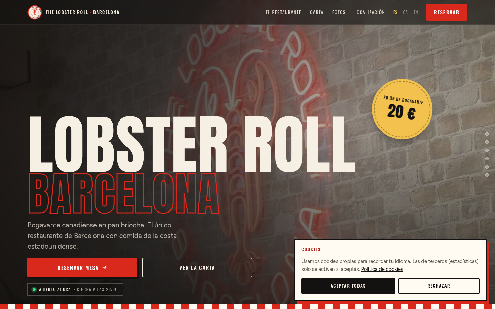
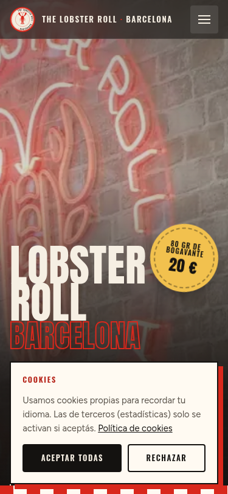

Hola Xiao. Estuve comiendo en Muntaner 22 y te dije que te pasaría una propuesta. Aquí va: una web que esté a la altura del local y del producto, pensada para el móvil, que es donde la va a ver casi todo el mundo.


Qué pasa con la web actual
- Es una plantilla de directorio: el mismo título repetido cinco veces en el carrusel, textos en tercera persona y fotos sin orden.
- No habla con vuestra identidad: el neón, las cajas rojas y blancas, el ladrillo. Nada de eso está.
- En el móvil cuesta encontrar lo importante: carta, horario, reserva y cómo llegar.
Qué propongo
- Diseño propio con vuestra marca: rojo bogavante, crema y negro, tipografía grande y vuestras fotos de protagonistas.
- Móvil primero. Todo a un toque: reservar, llamar, ver la carta, llegar.
- Carta y combos con precios, editables sin tocar código, en 7 idiomas.
- Reserva online con vuestro sistema actual y estado "abierto / cerrado" en tiempo real.
- Preparada para Google: ficha de restaurante, búsquedas locales, redes sociales con imagen correcta.